Disclaimer
All images are the property of Paramount. No infringement of copyright
is intended. However, free publicity for the film is intended!
Got wheat?
Days of Heaven does, and then some. Surely this
is one of the most beautiful films ever made. Terrence Malick's second
film about love, death and whole grains set in the turn-of-the-century
Texas panhandle was filmed in 1976 before being released in 1978.
What is this film all about?
At the turn of the century, Bill, his sister Linda and his other
"sister" Abby (in reality his girlfriend) flee Chicago slums for the open
plains of Texas. They end up working on a wheat farm owned by The Farmer.
The Farmer falls for Abby. When Bill finds out that The Farmer is
terminally ill, he convinces Abby to marry The Farmer thinking that he
will soon inherit the farm. But things don't go quite as planned for
everyone.
Images

|
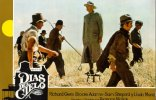
|
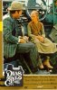
|
| Bill talks with the farm foreman |
Off to a hard day's work in the field |
Linda takes a break |
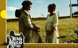
|
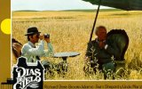
|
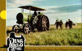
|
| Bill talks with Abby--notice the wheat in the background
|
The landowning farmer must also work terribly hard
|
Farm equipment in all its glory |
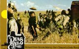
|
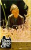
|
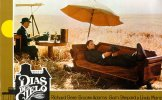
|
| Bill and another farm worker come to blows--over who was the
best James Bond |
A sad Linda |
Oh, it's tough to be the boss! |
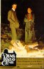
|
|
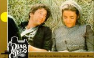
|
| Nothing like sparking romance over an open fire |
Nothing like ruining romance by setting the farm on fire
|
Bill and Abby in their salad days. |
|
|
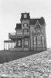
|
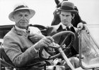
|
| Sam Shepard (The Farmer) and Brooke Adams (Abby) take a break
|
The Farmer's house on the hill |
The farm foreman and the Farmer |
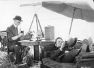
|
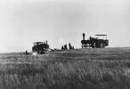
|
|
| Another picture of the Farmer and his accountant
|
More farm equipment |
The Farmer and Abby |
Cast credits
Starring:
- Richard Gere as Bill
- Brooke Adams as Abby
- Linda Manz as Linda
- Sam Shepard as The Farmer
- Robert Wilke as the farm Foreman
- Jackie Shultis as Linda's friend
- Stuart Margolin as Mill Foreman
- Tim Scott as Harvest Hand
- Gene Bell as Dancer
- Doug Kershaw as Fiddler
- Richard Libertini as Vaudeville Leader
- Frenchie Lemond as Vaudeville Wrestler
- Sahbra Markus as Vaudeville Dancer
- Bob Wilson as Accountant
- Muriel Jolliffe as Headmistress
- John Wilkinson as Preacher
- King Cole as Farm Worker
Want to chat about Days of Heaven? Join the unofficial
Terrence Malick mailing list and discuss his films!
Click here to subscribe to
terrencemalick
Prefer the low-tech way of subscribing? Send a blank email to:
terrencemalick-subscribe@yahoogroups.com
You'll get an automated email saying that your subscription request
has been forwarded to your list owner (guess who) for approval, so be
prepared for a teeny wait.
Prefer the low-tech way of subscribing? Send a blank email to:
terrencemalick-subscribe@onelist.com
You'll get an automated email saying that your subscription request has
been forwarded to your list owner (guess who) for approval, so be prepared
for a teeny wait.
Memorable
lines
BILL
I'm always looking out for you.
LINDA
You deserve a medal.
LINDA V.O.
He was tired of living like the rest of them nosing around like a pig
in a gutter. He wasn't in a mood no more. He figured there must be
something wrong with 'em, the way they always got no luck, and they ought
to get it straightened out. He figured some people need more than they
got, other people got more than they need. Just a matter of getting us all
together.
FARMER
I think I love you.
ABBY
What a nice thing to say.
FARMER
You're like an angel.
ABBY
I wish I was.
LINDA V.O.
I got to like this farm. Do anything I want, roll in the fields, talk
to the wheat patches. When I was sleepin' they'd talk to me. They'd go in
my dreams.
LINDA V.O.
Sometimes I feel very old, like my whole life's over, like I'm not
around anymore.
FARMER (to ABBY)
You know what I thought when I first saw you? I thought if only I
could touch your hair that everything would be alright. You make me feel
like I've come back to life. Isn't that funny? I always thought that being
alone was just something that a man had to put up with you know. It's like
uh I just got used to it. Sometimes it's like you're right inside of me
you know that I can hear voice and feel your breath and everything.
LINDA V.O.
The devil just sittin' there laughing. He's glad when people does
that. Then he sends them to the snakehouse. He just sits there and laughs
and watch while you're sitting there all tied up and snakes are eating
your eyes up. The snakes go down your throat and eat all your systems up.
(Cut to Bill and Abby kissing. The Farmer sees this and smashes
things.)
I think the devil was on the farm.
LINDA V.O.
The sun looks ghostly when there's a mist on the river and
everything's quiet. I never knowed it before. And you could see people on
the shore but it was far off and you couldn't see what they were doing .
They were probably calling for help or something or they were trying to
bury somebody or something. We seen the trees that the leaves are shaking
and it looks like shadows of guys that are coming at you and stuff. We
heard owls squawking away hooting away. We didn't know where we were going
and what we were going to do. I'd never been on a boat before. That was
the first time.
Some sights that I saw was really spooky that it gave me goosebumps. I
felt like cold hands touching the back of my neck and, and it could be the
dead coming for me or something. I remember this guy his name was
Blackjack, he died. He only had one leg and he died. And I think that was
Blackjack making those noises.
LINDA V.O.
(about her school friend)
This girl she didn't know where she was goin' or what she was gonna
do. She didn't have no money or nothin'. Maybe she'd meet up with a
character. I was hoping things would work out for her. She was a good
friend of mine.
Interview excerpts
In the documentary Visions in Light director of photography
Nestor Almendros says Malick:
told me it would be a very visual movie, the story would be told
through visuals. Very few people really want to give that priority to
image. Usually the director gives priority to the actors and the story but
here the story was told through images.
In this period there was no electricity, It was before electricity
was invented and consequently there was less light. Period movies should
have less light. In a period movie the light should come from the windows
because that is how people lived.
On the subject of shooting the film at "Magic Hour," Almendros comments:
Magic hour is a euphemism, because it's not an hour but around 25
minutes at the most. It is the moment when the sun sets and after the sun
sets and before it is night, the sky has light but there is no actual sun.
The light is very soft and there is something magic about it. It limited
us to around twenty minutes a day but it did pay on the screen. It gave
some kind of magic look, a beauty and romanticism.
Haskell Wexler, who took over as Director of Photography when
Almendros left to shoot another film, says:
I did some hand held shots on a panaflex - the opening of the film
in the steel mill. I used some diffusion, Nestor didn't use any diffusion.
I felt very guilty using the diffusion and having the feeling of violating
a fellow cameraman.
Trivia
- Malick wanted Richard Gere to cut his hair for the film so it would be
in keeping with men's hairstyles of the period, but Richard Gere refused.
- Malick is a notorious perfectionist and was reportedly unhappy with
the finished film, he is said to have prefered 'Badlands'. (Kind visitor
Peter speculates that this may be the reason he never made another film
(until recently)).
- Set in Texas, the film was photographed in Alberta, Canada.
NEW!!! Film and literature
references
- Henry James' novel Wings of A Dove has a similar plot to Days
of Heaven.
- The 1956 film Giant may be an influence as well. Check it out:
| Giant (1956, dir. George Stevens) |
Days of Heaven |
| Set in Texas |
Set in Texas |
| Landowner's giant Victorian house stands out on the flat
plains |
Landowner's giant Victorian house stands out on the flat
plains |
| Outsider and dark-haired beauty Elizabeth Taylor marries rich
lonely landowner Rock Hudson |
Outsider and dark-haired beauty Brooke Adams marries rich lonely
landowner Sam Shephard |
| Dirt-poor James Dean yearns for the finer things in life |
Dirt-poor Richard Gere yearns for the finer things in life |
- The 2000 film George Washington references Days of Heaven.
| George Washington (2000, dir. David Gordon Greene) |
Days of Heaven |
| Narrated by young girl |
Narrated by young girl Linda |
| A group of young, very poor children spend time in the city |
A group of very poor workers spend time in the country |
| Trains and train tracks are prominently featured |
Trains and train tracks are prominently featured |
| A tragic accidental death is featured |
A tragic accidental death is featured |
| Protagonist George yearns to be Superman |
Protagonist Bill yearns to be a rich man |
Acknowledgements
Thanks to Peter for film facts and info, and Karl for going on a
unique tour of Toronto, Canada's movie memorabilia stores on a quest for
Days of Heaven.
 Back to the Flicks of
Terrence Malick
Back to the Flicks of
Terrence Malick
Writing copyright T. Oates 2001

{kind=link}
{kind=link}
{kind=link}
{kind=link}
{kind=link}
{kind=link}
{kind=link}
{kind=link}
{kind=link}
{kind=link}
{kind=link}
{kind=link}
{kind=link}
{kind=link}
{kind=link}
{kind=link}
{kind=link}